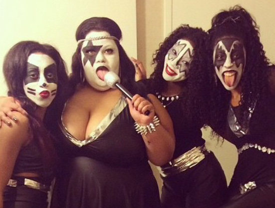

The Beginning of a New Tradition
How did this tradition begin you ask? As young women growing up in St. Louis, we were tired of constantly being let down by Halloween celebrations in St. Louis. We decided to travel somewhere and whatever location we chose, we would do a group costume. We googled best Halloween celebrations in the nation and New Orleans popped right up! After doing research, New Orleans for Halloween made a lot of sense. Ghost culture, Voodoo, the many haunted locations, haunted tours, not to mention the food, drinks, and the street parties. We were sold on the idea; New Orleans for Halloween was the place for us.
The Turnup
We made our way to New Orleans and got ready for a night of fun. As we got dressed in our leather and makeup, we began to feel like KISS. We even made up a song and dance routine to the KISS song, I Wanna Rock and Roll All Night.
KISS 2014
We made our way to Bourbon Street in the French Quarter to party. We were surrounded by fellow partygoers, as we barhopped our way down the crowded street. We were stopped so people could take pictures of us, we constantly did our routine, and even entered a costume contest. Halloween in New Orleans lived up to our expectations. We definitely were RockStars that night.
The Aftermath
After that first epic night in 2014, Erin, Kendra, Shannon, and I decided to make Halloween in New Orleans our tradition. Even though life has pulled us in different directions, Erin lives in New Orleans, Kendra is in Los Angeles, Shannon is in Chicago, and I am in St. Louis, we meet in New Orleans every Halloween to reconnect as we dress up in group costumes and party. Even though we have gone from young women to slightly older women, I hope that our tradition never ends and our fun and friendship continues.


Wizard of Oz 2016

Peter Pan 2017
I imagine us continuing this tradition forever and dressing up in our old age. Hopefully, enjoying and celebrating life, as well as maintaining our connection as friends never has an age limit.